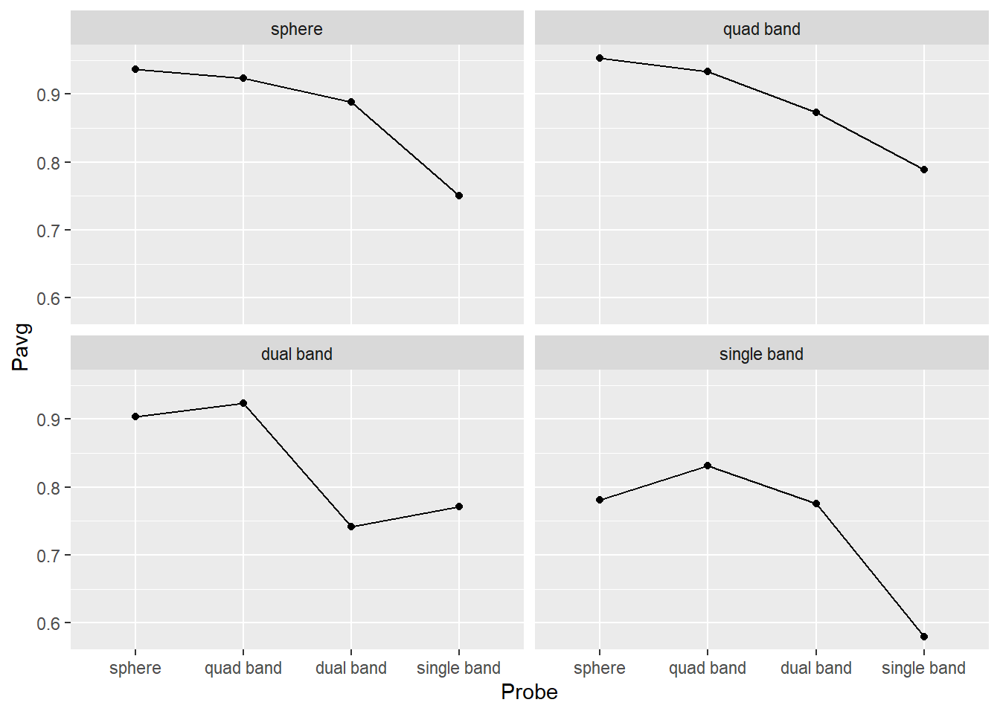

7 Working with Factors
Let us start with a “warm up” exercise that will require combining various things that you already learned. Download persistence.csv file (you can use the URL directly, but that will cause R to download it every time you call the function, so let’s not overstress the server) and put it into data subfolder in your seminar project folder. This is data from a Master thesis project by my student Kristina Burkel, published as an article in Attention, Perception, & Psychophysics. The work investigated how a change in object’s shape affected perceptual stability during brief interruptions (50 ms blank intervals). The research question was whether the results will match those for one other two history effects, which work at longer time scales. Such match would indicate that both history effects are likely to be produced by the same or shared neuronal representations of 3D rotation. Grab the exercise notebook before we start.
7.1 How to write code
From now on, you will need to implement progressively longer analysis sequences. Unfortunately, the longer and the more complex the analysis is, the easier it is to make a mistake that will ruin everything after that stage. And you will make mistakes, simply because no one is perfect and everyone makes them. I make them all the time. Professional programmers make them. So the skill of programming is not about writing the perfect code on your first attempt, it is writing your code in an iterative manner, so that any mistake you make (and, again, you will make them!) will be spotted and fixed immediately, before you continue adding more code. It should be like walking blind through uncertain terrain: One step a time, no running, no jumping, as you have no idea what awaits you.
What does this mean in practical terms? In a typical analysis (such as in the exercise below), you will need to do many things: read data, select columns, filter it, compute new variables, group data and summarize it, plot it, etc. You might be tempted to program the whole thing in one go but it is a terrible idea. If your step #2 does not do what you think it should, your later stages will work with the wrong data and tracing it back to that step #2 may not be trivial (it almost never is). Instead, implement one step at a time and check that the results look as they should. E.g., in the exercise below, read the table. Check, does it look good, does it even have the data? Once you are sure that your reading bit works, proceed to columns selection. Run this two-step code and then check that it works and the table looks the way it should. It does (it has only the relevant columns)? Good, proceed to the next step.
Never skip these checks! Always look at the results of each additional step, do not just hope that they will be as they should. They might, they might not. In the latter case, if you are lucky, you will see that and are in for a long debugging session. But you may not even notice that computation is subtly broken and use its results to draw erroneous conclusions. It may feel overly slow to keep checking yourself continuously but it is a faster way to program in a long term. Moreover, if you do it once step at a time, you actually know, not hope, that it works.
I’ve spent three paragraphs on it (and now adding even the forth one!), because, in my opinion, this approach is the main difference between novice and experienced programmers (or, one could go even further and say between good and bad programmers). And I see this mistake of writing everything in one go repeated again and again irrespective of the tool people use (you can make a really fine mess using SPSS!). I makes a mess every time a deviate from this approach! So, pace yourself and let’s start programming in earnest!
7.2 Implementing a typical analysis
In the first exercise, I want you to implement the actual analysis performed in the paper. Good news is that by now you know enough to program it! Note that steps 1-4 (everything but plotting) should be implemented as a single pipeline. Start with the first action and keep adding more verbs to it but you should end up with a single chained computation. This is actually more important than you might think: Putting read-and-preprocessing into a single pipe means no lurking temporary / intermediate variables that you may have changed in the mean time. A single pipe ensures that you are guaranteed to get the same table you run it. Splitting it into a few smaller chunks means you can (which means you will) run them out-of-order, run one computation an extra time, forget that you modified the data and you need to reload it, etc. I have been caught by this way more often than I would like to admit, so having a single definitive computation is always a good idea.
-
Load the data in a table. Name of the variable is up to you. Typically, I use names like
data,reports,results, etc. Don’t forget to specify columns’ type. - Exclude
filenamecolumn (it duplicatesParticipantandSessioncolumns). - Compute a new variable
SameResponsewhich isTRUEwhenResponse1andResponse2match each other (in the experiment, that means that an object was rotating in the same direction before and after the intervention). - For every combination of
Participant,PrimeandProbecompute proportion of same responses. You can do this in two ways. Recall thatas.integer(TRUE)is1andas.integer(FALSE)is0. Thus, you can either compute proportion as mean or compute the sum of same responses and divide it by total number of trials. Use function n() for the latter, it returns the total number of rows in the table or the group. Try doing it both ways. - Plot the results with
Probevariable on x-axis, proportion of same responses on y-axis, and usePrimeto facet plots. Use box plots (or violin plots) to visualize the data. Try adding color, labels, etc. to make plots look nice.

Do exercise 1.
When you examine the plot, you can see some sort of non-monotonic dependence with a dip for "stripes-2" and "stripes-4" objects. In reality, the dependence is monotonic, it is merely the order of values on the x-axis that is wrong. The correct order, based on the area of an object covered with dots, is "heavy poles sphere", "stripes-8", "stripes-4", "stripes-2". Both Prime and Probe are ordinal variables called factors in R. Thus, to fix the order and to make object names a bit better looking, we must figure out how to work with factors in R.
7.3 Factors
Factors are categorical variables, thus variables that have a finite fixed and known set of possible values. They can be either nominal (cannot be ordered) or ordinal (have a specific order to them). An example of the former is the drive train (drv) variable in mpg table. There is a finite set of possible values ("f" for front-wheel drive, "r" for rear wheel drive, and "4" for a four-wheel drive) but ordering them makes no sense. An example of an ordinal variable is a Likert scale that has a finite set of possible responses (for example, "disagree", "neither agree, nor disagree", "agree") with a specific fixed order (participant’s support for a statement is progressively stronger so that "disagree" < "neither agree, nor disagree" < "agree").
You can convert any variable to a factor using factor() or as.factor() functions. The latter is a more limited version of the former, so it makes little sense to ever use it. Below, I will only use factor().
When you convert a variable (a vector) to factor, R:
- figures out all unique values in this vector
- sorts them in an ascending order
- assigns each value an integer index, a.k.a. “level”
- uses the actual value as a “label”.
Here is an example of this sequence: there four levels sorted alphabetically (note that R prints out not only the vector but also its levels).
## [1] C A D B A B
## Levels: A B C DYou can extracts levels of a factor variable by using the function of the same name
levels(letters_as_factor)## [1] "A" "B" "C" "D"You can specify the order of levels either during the factor() call or later using forcats library (more on that later). For example, if we want to have levels in the reverse order we specify it via levels parameter. Note the opposite order of levels.
letters <- c("C", "A", "D", "B", "A", "B")
letters_as_factor <- factor(letters, levels = c("D", "C", "B", "A"))
letters_as_factor## [1] C A D B A B
## Levels: D C B AWe can also specify labels of individual labels instead of using values themselves. Note that the labels must match levels in number and order.
responses <- c(1, 3, 2, 2, 1, 3)
responses_as_factor <- factor(responses, levels = c(1, 2, 3), labels = c("negative", "neutral", "positive"))
responses_as_factor## [1] negative positive neutral neutral negative positive
## Levels: negative neutral positiveYou can see indexes that were assigned to each level by converting letter_as_factor to a numeric vector. In this case, R throws away labels and returns indexes.
as.numeric(letters_as_factor)## [1] 2 4 1 3 4 3However, be careful when level labels are numbers. In the example below, you might think that as.numeric(tens) should give you [20, 40, 30]54 but these are labels, not levels that go from \(1\) to \(3\)! If you need to convert labels to numbers, you have to do it in two steps as.numeric(as.character(tens)): as.character() turns factors to strings (using labels) and as.numeric() converts those labels to numbers (if that conversion can work).
## [1] 20 40 30
## Levels: 20 30 40
print(as.numeric(tens))## [1] 1 3 2
print(as.numeric(as.character(tens)))## [1] 20 40 30For the next exercise, copy-paste the code from exercise #1 and alter it so the labels are "sphere" (for "heavy poles sphere"), "quad band" (for "stripes-8"), "dual band" ("stripes-4"), "single band" (for "stripes-2") and levels are in that order. Your plot should look something like this.
Do exercise 2.
7.4 Forcats
Tidyverse has a package forcats55 that makes working with factors easier. For example, it allows to reorder levels either by hand or automatically based on the order of appearance, frequency, value of other variable, etc. It also gives you flexible tools to changes labels either by hand, by lumping some levels together, by anonymising them, dropping unused levels, etc. In my work, I mostly use reordering (fct_relevel()) and renaming (fct_recode()) of factors by hand. You will need to use these two functions in exercise #3. However, if you find yourself working with factors, it is a good idea to check other forcats functions to see whether they can make your life easier.
To reorder factor by hand, you simply state the desired order of factors, similar to they way you specify this via levels= parameters in factor() function. However, in fct_relevel() you can move only some factors and others are “pushed to the back”.
letters <- c("C", "A", "D", "B", "A", "B")
letters_as_factor <- factor(letters, levels = c("B", "C", "D", "A"))
print(letters_as_factor)## [1] C A D B A B
## Levels: B C D A
# specifying order for ALL levels
letters_as_factor <- fct_relevel(letters_as_factor, "D", "C", "B", "A")
print(letters_as_factor)## [1] C A D B A B
## Levels: D C B A
# specifying order for just ONE level, the rest are "pushed back"
# "A" should now be the first level and the rest are pushed back in their original order
letters_as_factor <- fct_relevel(letters_as_factor, "A")
print(letters_as_factor)## [1] C A D B A B
## Levels: A D C BYou can also put a level at the very back, as second level, etc. fct_relevel() is very flexible, so check reference whenever you use it.
To rename individual levels you use fct_recode() by providing new = old pairs of values.
letters_as_factor <- factor(c("C", "A", "D", "B", "A", "B"))
letters_as_factor <- fct_recode(letters_as_factor, "_A_" = "A", "_C_" = "C")
print(letters_as_factor)## [1] _C_ _A_ D B _A_ B
## Levels: _A_ B _C_ DNote that this allows you to merge levels by hand.
letters_as_factor <- factor(c("C", "A", "D", "B", "A", "B"))
letters_as_factor <- fct_recode(letters_as_factor, "_AC_" = "A", "_AC_" = "C")
print(letters_as_factor)## [1] _AC_ _AC_ D B _AC_ B
## Levels: _AC_ B DFor exercise #3, redo exercise #2 but using fct_relevel() and fct_recode(). You still need to use factor() function to convert Prime and Probe to factor but do not specify levels and labels. Use fct_relevel() and fct_recode() inside mutate() verbs to reorder and relabel factor values (or, first relabel and then reorder, whatever is more intuitive for you). The end product (the plot) should be the same.
Do exercise 3.
7.5 Plotting group averages
Let us keep practicing and extend our analysis to compute and plots averages for each condition (Prime×Probe) over all participants. Use preprocessing code from exercise #3 but, once you compute a proportion per Participant×Prime×Probe, you need to group data over Prime×Probe to compute average performance across observers. Advice, do not reuse the name of the column, e.g., if you used Psame for proportion per Participant×Prime×Probe, use some other name for Prime×Probe (e.g. Pavg). Otherwise, it may turn out to be very confusing (at least, this is a mistake a make routinely). Take a look at the code below, what will the Range values be?
tibble(ID = c("A", "A", "B", "B"),
Response = c(1, 2, 4, 6)) |>
group_by(ID) |>
summarise(Response = mean(Response),
Range = max(Response) - min(Response))I routinely assume that they should be 1 for "A" (because 2-1) and 2 for "B" (6-4). Nope, both are 0 because by the time Range = max(Response) - min(Response) is executed, original values of Response are overwritten by Response = mean(Response), so it has just one value, the mean. And min() and max() of a single value is that value, so their difference is 0. It is obvious once you carefully consider the code but it is not obvious (at least to me) straightaway. In short, be very careful when you are reusing column names. Better still, do not reuse them, be creative, come up with new ones!
Getting back to the exercise, compute average performance per Prime×Probe. Store the result of the computation in a new variable (I’ve called it persistence_avg) and check that results makes sense, e.g. you have just three columns Prime, Probe, and Pavg (or however you decided to name the column). They should look like this:
| Prime | Probe | Pavg |
|---|---|---|
| sphere | sphere | 0.9366667 |
| sphere | quad band | 0.9233333 |
| sphere | dual band | 0.8885185 |
| sphere | single band | 0.7507407 |
| quad band | sphere | 0.9533333 |
| quad band | quad band | 0.9333333 |
| quad band | dual band | 0.8729630 |
| quad band | single band | 0.7885185 |
| dual band | sphere | 0.9033333 |
| dual band | quad band | 0.9229630 |
| dual band | dual band | 0.7418519 |
| dual band | single band | 0.7707407 |
| single band | sphere | 0.7814815 |
| single band | quad band | 0.8311111 |
| single band | dual band | 0.7751852 |
| single band | single band | 0.5792593 |
Do exercise 4.
Then, plot the results. Use geom_point() plus geom_line() to plot the mean response The plot should like like this (hint, drop color mapping and map Prime to group property).

Do exercise 5.
Do exercise 6.
7.6 Plotting our confidence in group averages via quantiles
From the plots above, you get a sense that identities of the probe and prime (objects before and after the interruption) matter. Single band appears to be the poorest prime (its line is lowest) and probe (its dots are lower than the rest). Conversely, sphere is an excellent prime (line at the top) and probe (dots are very high). However, averages that we plotted is just a point estimate for most likely effect strength but they alone cannot tell us whether differences in objects’ shape do matter. For this, you need to perform statistical analysis but to get at least a feeling of how confident can you be about these differences, you need to plot a measure of variability associated with that statistics. I.e., [1, 5, 9] and [4, 5, 6] both have identical mean of 5 but their standard deviation is 4.5 times different (4.51 vs. 1). In the second case, the true mean is likely to be somewhere very near to 5, whereas we would have much less confidence in the former one.
One way to characterize the mean is by computing its standard error. However, it is best used when actual data is distributed normally or, at least, symmetrically around the mean, i.e., the distance from an observation to the mean could be the same irrespective of whether it is larger or smaller. This is a luxury you can expect only for variables that live on ±∞ range (support) or if the practically observed range of values is very far from either the floor or the ceiling. Adult height is an example of the latter: You cannot have height below 0 but an average adult height is far enough from that limit so its distribution is normal and symmetric enough. Unfortunately, a lot of data that we collect in psychology or social science research does not fit this description: Binomial data with yes/no or correct/incorrect responses lives on 0..1 range, response times have long right tail because they cannot be negative or even particularly short (200 ms would be a realistic floor for key presses, ~120 ms for eye saccadic response under very specific experimental conditions.) End I did not mention Likert scale data because it is an ordered categorical type data, so you cannot use raw data to compute even the mean, let alone its error, so I will show you how to visualize it later.
In our case the outcome variable is a proportion limited to 0 to 1 range. From practical point of view this means that our measure of variability is unlikely to be symmetric relative to the mean (with a unique exception of the mean exactly 0.5). I.e., think about a group average \(P_{avg} = 0.8\), points below that average can be further away from the mean (up to 0.8) than points above it (0.2 away at most). This compression is called either a ceiling (when you get squashed by the upper range) or flooring (when you cannot go below certain value) effect. Thus, we need a measure that would take this asymmetry into account. Later on you will learn how to do it using bootstrapping but we will start with a simpler approach of just using quantiles of a distribution to understand its variability.
To compute this quantiles-based interval, you need to compute its lower and upper limits separately via quantiles. A quantile for 0.1 (10%) returns a value, so that 10% of all values in the vector are below it, the quantile of 0.9 (90%) means that only 10% of values are above it (or 90% are below). So, an 80% confidence intervals includes values that are between 10% and 90% or, alternatively, between 0.1 and 0.9 quantiles.

To compute this, R has function quantile().
x <- 0:50
quantile(x, 0.1)## 10%
## 5Modify code from from exercise #5 to compute two additional variables/columns for lower and upper limits of the 89%56 interval (think about what these limits are for 89% interval). Then, use geom_errorbar() to plot 89% interval (you will need to map the two variable you computed to ymin and ymax properties). The plot should look like this (hint, drop color mapping and map Prime to group property).
Do exercise 7.
7.7 Dealing with Likert scales
Likert scales are one of the most popular ways to measure responses in psychology. And, at least this is my opinion of the literature, they tend to be misanalyzed and misreported (IMHO). It is quite common to report an average and a standard error of a response across all participants, but these numbers cannot be actually computed (because these are ordered categorical values, not numbers) and even if you trick the computer in doing so (by pretending that levels are actual numbers) these numbers are ill-suited to characterize the response, as you will see below. The proper analysis of Likert scale data requires a use of the “Item Response Theory” and although it is very straightforward, it is outside of the scope of this book. Instead, we will look at how you can visualize the responses in the meaninful way, although the complete story will have to wait until we learn about bootstrapping.
Below, we will use data collected using Intrinsic Motivation Inventory (IMI), where participants needed to respond on a 7-point Likert scale indicating indicate how true a statement (such as “I enjoyed doing this activity very much” or “I was pretty skilled at this activity.”) is for them:
- Not at all true
- Hardly true
- Slightly true
- Somewhat true
- Mostly true
- Almost completely true
- Very true
Before we visualize the data, we need to read and preprocess it. Perform the following using a single pipe:
- Read the file likert-scale.csv specifying column types
- Convert Condition column to factor where 1 is “game” and 2 is “experiment”
- Convert Response column to factor using levels described above.
Here is how the first five rows of the table look for me:
| Participant | Condition | Response |
|---|---|---|
| TMM1990w | game | Slightly true |
| VEH1985w | experiment | Slightly true |
| CEN2000w | experiment | Hardly true |
| YWH1992w | game | Mostly true |
| IDK1985w | experiment | Hardly true |
Do exercise 8.
Hopefully, using actual labels instead of original number makes it clear that computing mean and standard error is impossible (what is an average of “Slightly true” and “Hardly true”?). Instead, we need to count the number of response per response level, convert that to a proportion of responses, and plot them to see the distribution. You know almost everything you need to perform this. Here is the logic:
- group data per response level
- summarize the data by computing number of entries per group, don’t forget to ungroup table. You can also combine the two steps to count responses per level.
- compute proportion per response by dividing number of responses for each level by the total number of responses.
Once you computed the aggregates, plot them using geom_point() and geom_line(). The only catch here, is that geom_line() cannot work with discrete x-axis, so when specifying the aesthetics for x-axis, you need to use as.integer(Response) instead of just Response and you will need to use scale_x_continuous() to specify breaks (1 to 7) and labels (levels of our Likert scale). The end results should look as follows:
The study in question used to experimental conditions, so it would be informative to see whether this produce difference in responses. The logic of computation is (almost) the same: You need to group by both response level and experimental condition when counting responses but by condition alone when computing the proportion (why?). When visualizing, you only need to add color aesthetics to distringuish between the groups. The end results should be as follows:
Do exercise 10.
Note that we are missing information on uncertainty about proportion of response (i.e., error bars), but I will show you how to compute them once we get to bootstrapping. Also note that even if you would convert ordinal levels to real numbers, using mean and standard error would still be a bad idea. Note how squashed the distribution is to the lower side (particularly, when averaging across groups). Mean is a nice descriptor for symmetric distributions as then it coincides with both mode (most probable, highest point) and median (point that splits distribution half/half). But for skewed distributions, all three statistics — mode, mean, and median — will be at different locations and you should either report all or think about better ways to present the data. Same goes for a standard error which is a nice descriptor for a normally distributed data, less so for symmetric data (you’ll be missing information about exact shape and probably thinking about a normal one), not very good for skewed data. Here, data does not lie equally on both sides, so a symmetric standard error will overestimate variance on the left side (there is not much space to vary on the left), while simultaneously underestimating it on the right side. In short, always look at the data before compacting it to various statistic, even if such practice is common (this does not make it a good practice).